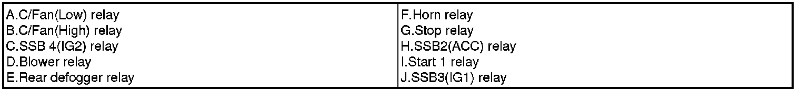
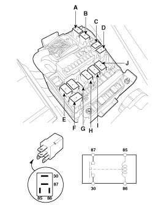
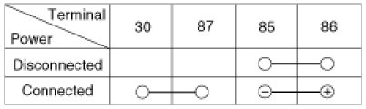
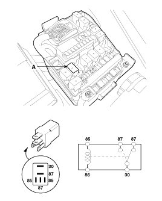
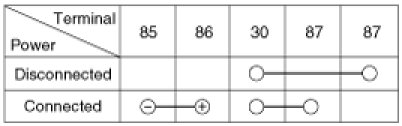
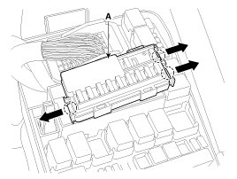
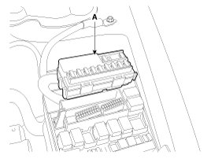
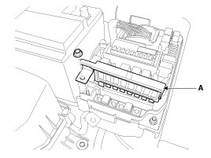

Relay Box: Testing and Inspection
Inspection
Power Relay Test (Type A)
NOTE:
- Do not use pliers.
- Pliers will damage the relays, which could cause the engine to stall or not start.
- Carefully remove the relay using the relay puller.
Check for continuity between the terminals.

1. There should be continuity between the No.30 and No.87 terminals when power and ground are connected to the No.85 and No.86 terminals.
2. There should be no continuity between the No.30 and No.87 terminals when power is disconnected.


Power Relay Test (Type B)
Check for continuity between the terminals.
A : Wiper relay
1. There should be continuity between the No.30 and No.87 terminals when power and ground are connected to the No.85 and No.86 terminals.
2. There should be continuity between the No.30 and No.87 terminals when power is disconnected.


Replacement of EMS box
1. Disconnect the negative(-) battery terminal.
2. Push 3 hooks in the engine room relay box out to the arrow direction and put up the EMS box assembly(A).

3. Disconnect the connector and remove the EMS box assembly(A).

Fuse Inspection
1. Be sure there is no play in the fuse holders, and that the fuses are held securely.
2. Are the fuse capacities for each circuit correct?
3. Are there any blown fuses?
If a fuse is to be replaced, be sure to use a new fuse of the same capacity. Always determine why the fuse blew first and completely eliminate the problem before installing a new fuse.
Multi Fuse
Multi Fuse is for optimizing the engine room package.

NOTE:
- Multi fuse(A) is needed to replace entirely when there is damage to only one fuse.
- When replace the multi fuse, refer to the "Engine compartment - component location" diagram exactly.
- Use the multi fuse capacities for each circuit correctly.